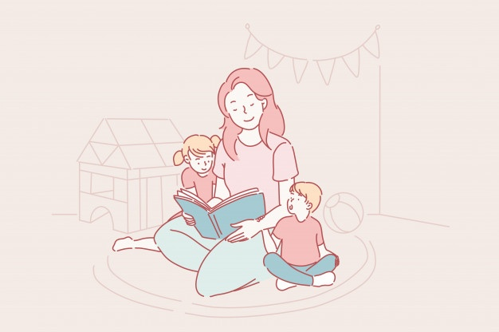

아래 내용으로 지원하시겠습니까?

100일전 작성
경기도 파주시
희망시급 10,000원
수정
지원하기를 누르면 내 프로필이 맘시터에게 바로 전송되니 신중하게 지원해주시길 바랍니다.
인터뷰 신청하기
인터뷰 지원이 완료되었습니다.
이제 시터의 답변을 기다려 주세요.
매일 낮 12시에 다시 인터뷰 지원을 할 수 있습니다.
인터뷰 지원권을 구매하면, 매일 하루 6명의 시터회원에게 지원할 수 있습니다.
지원권 구매하러 가기